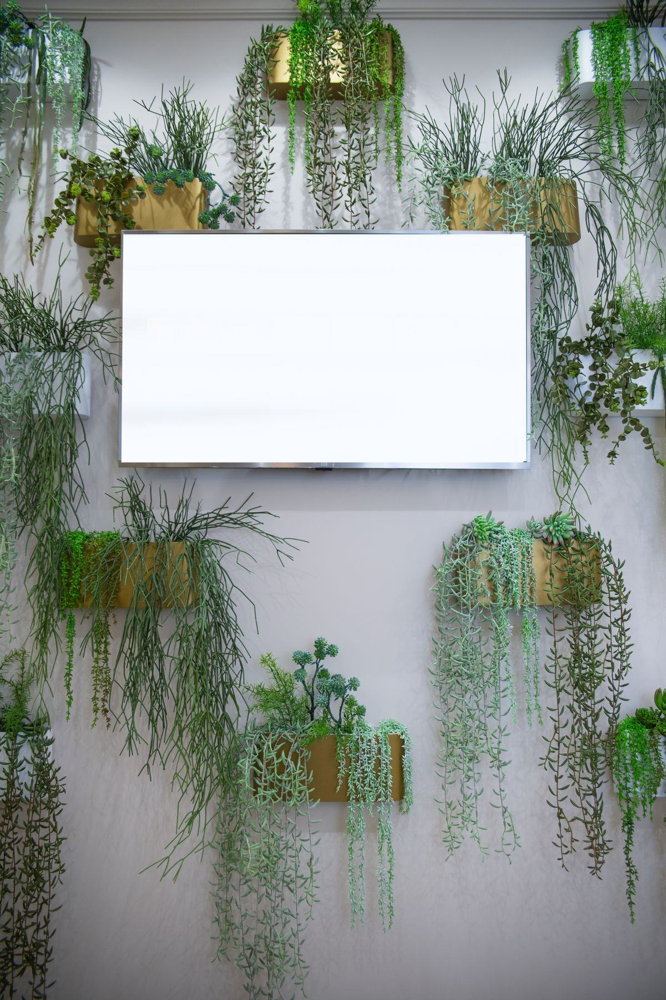

C'est le projet de végétalisation le plus fréquent en France, et le plus exigeant : il doit tenir face à un plateau climatisé, à une réglementation incendie, à un budget d'aménagement voté et à cinq années d'exploitation.
Par Sébastien Monnier, fondateur de Verdalys · Mis à jour le

Derrière un mur végétal de bureaux, il y a rarement une seule raison. Trois arguments reviennent systématiquement dans les dossiers d'aménagement, et il est utile de savoir lequel pèse le plus chez vous avant de choisir le système.
Le hall d'accueil est le premier point de contact avec un client, un candidat ou un investisseur. Un mur végétal y donne une profondeur, une matière et une couleur que ni la peinture ni le papier peint ne produisent. C'est aussi le fond de photo de la plupart des visuels institutionnels.
Dans un marché où le retour au bureau se négocie, l'aménagement des espaces devient un argument. Un mur végétal fait partie des rares investissements visibles au quotidien par tous les collaborateurs, pour un montant sans commune mesure avec un réaménagement complet de plateau. Trois expériences menées dans des bureaux aux Pays-Bas et au Royaume-Uni ont relevé une meilleure satisfaction, une concentration perçue plus élevée et une productivité mesurée supérieure dans les espaces enrichis de plantes (Nieuwenhuis et al., 2014).
Le feuillage et le substrat absorbent une partie des ondes sonores et réduisent la réverbération des grands volumes. L'effet est réel sur les voix et le bruit d'activité, plus limité sur les basses fréquences. Nous détaillons ce que le végétal fait — et ne fait pas — sur la page mur végétal acoustique.
Le même mur ne se conçoit pas de la même façon selon qu'il est vu de face à trois mètres, traversé cent fois par jour ou filmé en visioconférence. L'emplacement détermine le système, la densité de plantation et le niveau de finition.
L'emplacement de référence : derrière la banque d'accueil ou en vis-à-vis de l'entrée, souvent avec un logo découpé. Attention au sas : courants d'air froids en hiver et ensoleillement direct par une façade vitrée dégradent vite un mur naturel.
Ici le mur sert deux fonctions : arrière-plan de visioconférence et correction acoustique d'un volume fermé souvent très réverbérant. Un panneau végétalisé sur support absorbant est fréquemment préféré au mur vivant, parce qu'il ne demande ni eau ni maintenance dans une pièce fermée à clé.
C'est le lieu où le végétal est le plus regardé et le plus photographié. La proximité d'un point d'eau facilite l'alimentation d'un mur naturel ; la chaleur du coin cuisine et les projections imposent en revanche de protéger sa base.
Un mur végétal double face monté sur ossature autoportante sépare deux zones d'un open space sans construire, sans permis et sans toucher au bâti. C'est la solution la plus souple pour un plateau loué : elle se démonte et se déplace lors d'un réaménagement.
C'est la partie du projet la plus souvent sous-estimée. Un mur végétal qui fonctionne parfaitement dans un loft peut être refusé ou dépérir dans un immeuble de bureaux, pour quatre raisons précises.
Si les locaux reçoivent du public, le classement au feu des matériaux entre en jeu. Les végétaux stabilisés existent en versions traitées ignifuges, avec procès-verbal à l'appui : exigez-le. Le mur ne doit jamais réduire un dégagement, masquer un extincteur, un BAES ou une signalétique de sécurité, ni interférer avec le désenfumage. Le détail article par article : mur végétal en ERP.
Un mur naturel doit être atteignable sur toute sa hauteur, quatre à douze fois par an. Au-delà de 2,50 m, il faut prévoir un escabeau, une nacelle ou un accès par l'arrière. Un mur posé au-dessus d'un mobilier fixe ou d'un escalier devient très coûteux à entretenir — ou n'est plus entretenu du tout.
Une bouche de soufflage dirigée vers le végétal est la première cause d'échec en tertiaire. L'air chaud et sec dessèche le feuillage en quelques semaines. Il faut cartographier la ventilation avant de figer l'emplacement, et parfois simplement dévier une grille.
En location, l'accord du bailleur est nécessaire dès qu'on perce, qu'on pique une arrivée d'eau ou qu'on crée une évacuation. La charge admissible compte aussi : gorgé d'eau, un mur naturel pèse 40 à 100 kg par m². Les détails sont sur la page installation et support.
Comprendre le circuit interne évite de perdre trois mois. Un mur végétal de bureaux passe rarement par une seule signature.
L'initiative vient le plus souvent de l'office manager, des services généraux ou du directeur de l'environnement de travail. L'arbitrage remonte à la direction générale ou financière au-delà de quelques milliers d'euros. Dans un projet de travaux, c'est l'architecte d'intérieur qui pilote le lot.
Un mur végétal est généralement immobilisé comme un agencement et amorti sur plusieurs exercices, le contrat d'entretien restant une charge annuelle. Certaines entreprises préfèrent une location tout compris, entretien inclus, qui lisse la dépense. Le crédit-bail est aussi pratiqué.
Le budget d'entretien sur cinq ans peut représenter, sur un mur naturel, l'équivalent de la moitié du coût d'installation. Il doit être validé au moment de la décision, pas découvert un an plus tard. C'est le principal argument en faveur du mur végétal stabilisé dans les locaux loués.
Fourchettes hors taxes constatées en France, pose comprise, hors travaux préalables d'électricité et de plomberie. Le tarif final dépend de la hauteur, de l'accès, du système et de la densité de plantation.
| Projet type en bureaux | Ce que comprend le prix | Prix indicatif HT |
|---|---|---|
| Mur stabilisé, prix au m² | Végétaux stabilisés, cadre, pose | 400 – 900 €/m² |
| Mur naturel vivant, prix au m² | Support, substrat, plants, pose — hors irrigation | 600 – 1 200 €/m² |
| Mur d'accueil, 6 m² | Étude, fourniture et installation complète | 3 500 – 7 000 € |
| Mur d'open space, 15 m² | Étude, fourniture et installation complète | 9 000 – 18 000 € |
| Éclairage horticole | Projecteurs, rails et raccordement | 100 – 300 €/m² |
| Contrat d'entretien, mur naturel | Visites, engrais, taille, remplacement de plants | 80 – 200 €/m²/an |
Un mur végétal d'entreprise ne s'achète pas sur catalogue : le tarif dépend d'une visite, du relevé du support et des contraintes du plateau. Voici comment obtenir un chiffrage exploitable rapidement.
La surface et la hauteur sous plafond, une photo du mur concerné, la présence d'une arrivée d'eau, la nature du support (béton, placo, ossature), le niveau de lumière naturelle, le statut des locaux et la date de mise en service souhaitée. Avec ces éléments, un installateur produit une estimation sérieuse dès le premier échange.
Verdalys ne conçoit ni n'installe de murs végétaux. Nous cadrons votre demande, vérifions sa cohérence technique et budgétaire, puis la transmettons à un installateur partenaire capable d'intervenir dans votre secteur. Il vous rappelle sous 24 h ouvrées et établit un devis sur mesure, sur photos et plans ou après une visite selon le projet. La démarche est gratuite et sans engagement pour vous.
Des quartiers d'affaires de Paris, Lyon ou Lille aux technopôles de Rennes, Toulouse ou Nantes : chaque page ville détaille les projets de bureaux les plus courants sur place.
Mur stabilisé ou vivant, plafond, arbre, cadres, cloisons, plantes en pot : dix façons de végétaliser des locaux professionnels, comparées sur l'entretien, l'eau et le budget.
Lire l'article →Quel mur choisir, quelle surface, quel effet sur l'acoustique et la visioconférence, et quel budget pour 4 à 10 m².
Lire l'article →Ce que disent les études sur le végétal au bureau, où placer un mur pour qu'il serve l'image de l'entreprise, et comment en parler sans greenwashing.
Lire l'article →Gratuit, sans engagement — deux minutes pour décrire votre projet de bureaux.
Démarrer ma demande